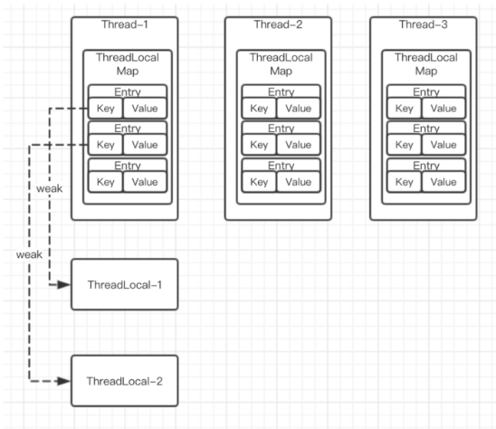
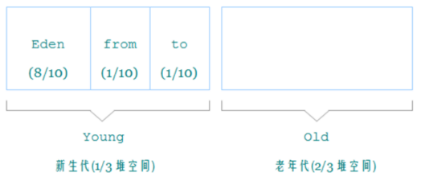
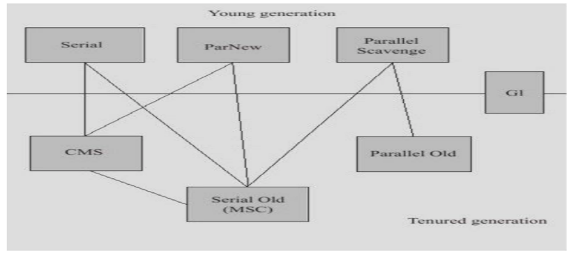
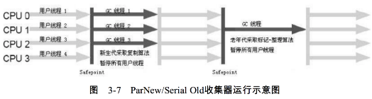
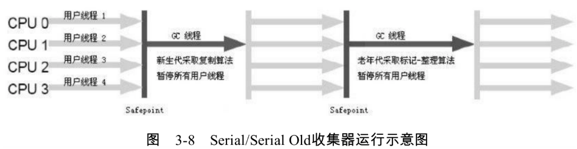
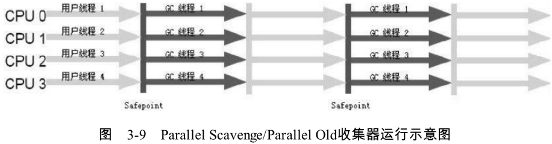
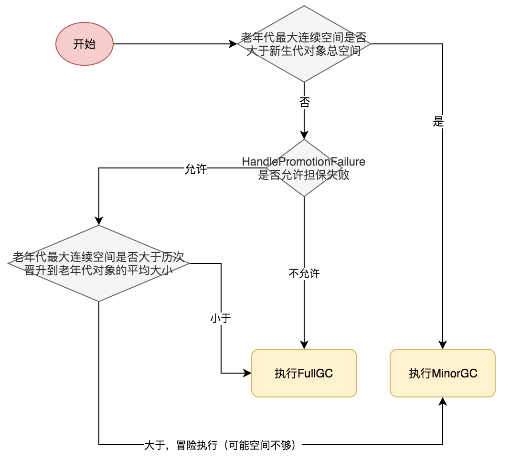

垃圾收集器与内存分配策略
基础理论
哪些内存需要回收？对象已死吗？
通过引用计数器算法和可达性分析算法判断对象是否可以回收。
1、引用计数算法
- 实现简单，判断效率高
- 无法解决循环引用的问题，主流的Java虚拟机都没有选用这种算法来管理内存
2、可达性分析算法
判断对象是否通过GCRoot可达。通过一系列的GC Roots对象作为起点，从这些节点向下搜索，搜索所走过的路径称为引用链，当一个对象到GC Roots没有任何一个链相连，就是不可达。
哪些可以做为GC ROOT
- 虚拟机栈（栈针中的本地变量表）对应的对象---对象还在虚拟机栈中
- 方法区中静态属性引用的对象，类中通过
static修饰的属性 - 方法区中常量引用的对象，常量指编译器生成的各种字面量和符号引用。比如
String a="abcd"中的abcd - 本地方法栈中JNI（即Native方法）引用的对象
关于引用
- 强引用
只要有强引用存在，垃圾收集器永远不会回收被引用的对象。强引用一般指new Object()。需要注意的是一个对象只要有强引用关联，不管它是否还有软引用、弱引用、虚引用都不会被回收。
- 软引用
有用但非必要的对象，系统将在要发生内存溢出异常前，对此进行回收，回收之后还没有足够的内存，才会抛出内存溢出。SoftReference。使用场景：缓存。
//-XX:+PrintGCDetails -Xmx20m
public class SoftReferenceTest {
public static void main(String args[]) {
int MAX_SIZE = 100;
List<Image> imageList = new ArrayList<>();
for (int i = 0; i < MAX_SIZE; i++) {
imageList.add(new Image("" + i));
}
for (int j = 0; j < 10; j++) {
for (int i = 0; i < MAX_SIZE; i++) {
imageList.get(i).getData();
}
}
}
static class Image {
private String path;
private SoftReference<byte[]> data;
public Image(String path) {
this.path = path;
this.data = new SoftReference<>(new byte[0]);
}
private byte[] readData() {
return new byte[1024 * 1024];
}
public byte[] getData() {
byte reData[] = this.data.get();
if (reData == null || reData.length == 0) {
System.out.println("read --" + this.path);
reData = readData();
this.data = new SoftReference<>(reData);
}
return reData;
}
}
}
- 弱引用
非必须对象，只能生存到下一次垃圾收集发生之前。WeakReference。
使用：WeakHashMap和ThreadLocal。
- 虚引用
为对象设置虚引用关联的唯一目的就是能在这个对象被垃圾收集器回收时收到一个系统通知，PhantomReference需要和ReferenceQueue一同使用。
//-XX:+PrintGCDetails -Xmx20m
public class PhantomReferenceTest {
public static void main(String args[]){
ReferenceQueue referenceQueue = new ReferenceQueue();
List<PhantomReference> phantomReferenceList = new ArrayList<>();
for (int i = 0; i < 100; i++) {
phantomReferenceList.add(new PhantomReference(new byte[1024 * 1024], referenceQueue));
Reference reference;
while((reference= referenceQueue.poll()) != null){
phantomReferenceList.remove(reference);
}
//phantomReferenceList.get(i).get(); -- 代码写死返回null
System.out.println(phantomReferenceList.size());
}
}
}
WeakHashMap
WeakHashMap是Java集合框架里的一员，它是一种Map。它的特殊之处在于 WeakHashMap里的entry可能会被GC自动删除，即使程序员没有调用remove()或者clear()方法。
WeakHashMap的key是弱引用，key被回收后会添加到ReferenceQueue队列中，下次再操作WeakHashMap时会先根据ReferenceQueue删除被GC回收的键。
//-XX:+PrintGCDetails -Xmx20m
public class WeakHashMapTest {
public static void main(String args[]) {
WeakHashMap<Key, Object> weakHashMap = new WeakHashMap();
for (int i = 0; i < 100; i++) {
weakHashMap.put(new Key(), new Object());
System.out.println(i + "----" + weakHashMap.size());
}
}
static class Key {
private byte[] a = new byte[1024 * 1024];
}
}
ThreadLocal

public class ThreadLocal<T> {
public T get() {
Thread t = Thread.currentThread();
ThreadLocalMap map = getMap(t);
if (map != null) {
ThreadLocalMap.Entry e = map.getEntry(this);
if (e != null)
return (T)e.value;
}
return setInitialValue();
}
private T setInitialValue() {
T value = initialValue();
Thread t = Thread.currentThread();
ThreadLocalMap map = getMap(t);
if (map != null)
map.set(this, value);
else
createMap(t, value);
return value;
}
public void set(T value) {
Thread t = Thread.currentThread();
ThreadLocalMap map = getMap(t);
if (map != null)
map.set(this, value);
else
createMap(t, value);
}
public void remove() {
ThreadLocalMap m = getMap(Thread.currentThread());
if (m != null)
m.remove(this);
}
ThreadLocalMap getMap(Thread t) {
return t.threadLocals;//ThreadLocal.ThreadLocalMap threadLocals = null;
}
void createMap(Thread t, T firstValue) {
t.threadLocals = new ThreadLocalMap(this, firstValue);
}
static class ThreadLocalMap {
static class Entry extends WeakReference<ThreadLocal> {
Object value;
Entry(ThreadLocal k, Object v) {
super(k);
value = v;
}
}
private Entry[] table;
private Entry getEntry(ThreadLocal key) {
int i = key.threadLocalHashCode & (table.length - 1);
Entry e = table[i];
if (e != null && e.get() == key)
return e;
else
return getEntryAfterMiss(key, i, e);
}
private void set(ThreadLocal key, Object value) {
Entry[] tab = table;
int len = tab.length;
int i = key.threadLocalHashCode & (len-1);
for (Entry e = tab[i];
e != null;
e = tab[i = nextIndex(i, len)]) {
ThreadLocal k = e.get();
if (k == key) {
e.value = value;
return;
}
if (k == null) {
replaceStaleEntry(key, value, i);
return;
}
}
tab[i] = new Entry(key, value);
int sz = ++size;
if (!cleanSomeSlots(i, sz) && sz >= threshold)
rehash();
}
private void remove(ThreadLocal key) {
Entry[] tab = table;
int len = tab.length;
int i = key.threadLocalHashCode & (len-1);
for (Entry e = tab[i];
e != null;
e = tab[i = nextIndex(i, len)]) {
if (e.get() == key) {
e.clear();
expungeStaleEntry(i);
return;
}
}
}
private int expungeStaleEntry(int staleSlot) {
Entry[] tab = table;
int len = tab.length;
// expunge entry at staleSlot
tab[staleSlot].value = null;
tab[staleSlot] = null;
size--;
Entry e;
int i;
for (i = nextIndex(staleSlot, len);
(e = tab[i]) != null;
i = nextIndex(i, len)) {
ThreadLocal k = e.get();
if (k == null) {
e.value = null;
tab[i] = null;
size--;
} else {
int h = k.threadLocalHashCode & (len - 1);
if (h != i) {
tab[i] = null;
while (tab[h] != null)
h = nextIndex(h, len);
tab[h] = e;
}
}
}
return i;
}
private void rehash() {
expungeStaleEntries();
if (size >= threshold - threshold / 4)
resize();
}
private void expungeStaleEntries() {
Entry[] tab = table;
int len = tab.length;
for (int j = 0; j < len; j++) {
Entry e = tab[j];
if (e != null && e.get() == null)
expungeStaleEntry(j);
}
}
}
}
使用
private static final ThreadLocal<Map<Object, Object>> resources = new ThreadLocal<Map<Object, Object>>(){
protected Map<Object, Object> initialValue() {
return new HashMap<Object, Object>();
}
}
采用弱引用是为了不让ThreadLocalMap影响ThreadLocal的回收：
弱引用也是用来描述非必须对象的，但是它的强度比软引用更弱一些，被弱引用关联的对象只能生存到下一次垃圾收集发生之前。当垃圾收集器工作时，无论当前内存是否足够，都会回收掉只被弱引用关联的对象。在JDK1.2之后通过WeakReference类来实现弱引用。（只要对象被除WeakReference对象之外所有的对象解除引用后，该对象便可以被GC回收）
ThreadLocalMap使用ThreadLocal的弱引用作为key，如果一个ThreadLocal没有外部强引用来引用它，那么系统GC的时候，这个ThreadLocal势必会被回收，这样一来，ThreadLocalMap中就会出现key为null的Entry，就没有办法访问这些key为null的Entry的value，如果当前线程再迟迟不结束的话，这些key为null的Entry的value就会一直存在一条强引用链：Thread Ref -> Thread -> ThreaLocalMap -> Entry -> value永远无法回收，造成内存泄漏。
其实，ThreadLocalMap的设计中已经考虑到这种情况，也加上了一些防护措施：在ThreadLocal的get()、set()、remove()的时候都会清除线程ThreadLocalMap里所有key为null的value。
但是这些被动的预防措施并不能保证不会内存泄漏，就比如说下面几种情况，就会导致ThreadLocal可能会发生内存泄漏：
- 使用static的ThreadLocal，延长了ThreadLocal的生命周期，可能导致的内存泄漏（参考ThreadLocal 内存泄露的实例分析）。
- 分配使用了ThreadLocal又不再调用get(),set(),remove()方法，那么就会导致内存泄漏。
最佳实践：每次使用完ThreadLocal，都调用它的remove()方法，清除数据
另外需要注意，在使用线程池技术和ThreadLoacl时，如果使用完后不清理，可能会拿到“上一个线程”设置的值。这里的“上一个线程”和当前线程，其实对于的是一个线程。
不可达的对象并非”非死不可“？
对象的死亡过程：
- 如果对象在进行可达性分析后发现没有与GC Roots相连接的引用链，那它将会被第一次标记，并且进行一次筛选，筛选的条件是对象是否需要执行finalizer（没有覆盖finalizer()方法或者finalize()方法已经被虚拟机调用过）
- 如果有必要执行finalize方法，就加入到F-Queue队列中，由Finalizer线程触发其执行
自我拯救过程？
在finalizer()方法中重新与引用链上的一个对象建立关联，譬如把this赋值给其它对象。
Finalizer线程
final class Finalizer extends FinalReference {
private static ReferenceQueue queue = new ReferenceQueue();
private void runFinalizer(JavaLangAccess jla) {
synchronized (this) {
if (hasBeenFinalized()) return;
remove();
}
try {
Object finalizee = this.get();
if (finalizee != null && !(finalizee instanceof java.lang.Enum)) {
/** 在System中实现
public void invokeFinalize(Object var1) throws Throwable {
var1.finalize();
}
**/
jla.invokeFinalize(finalizee);
finalizee = null;
}
} catch (Throwable x) { }
super.clear();
}
private static class FinalizerThread extends Thread {
private volatile boolean running;
FinalizerThread(ThreadGroup g) {
super(g, "Finalizer");
}
public void run() {
if (running)
return;
running = true;
//死循环，从ReferenceQueue中取出对象然后执行其finalizer方法
for (;;) {
try {
Finalizer f = (Finalizer)queue.remove();
f.runFinalizer(jla);
} catch (InterruptedException x) {
}
}
}
}
//自动启动
static {
ThreadGroup tg = Thread.currentThread().getThreadGroup();
Thread finalizer = new FinalizerThread(tg);
finalizer.setPriority(Thread.MAX_PRIORITY - 2);//优先级
finalizer.setDaemon(true);//守护线程
finalizer.start();
}
}
注意：
- finalize()方法在一个对象被销毁和回收前会被调用
- 属于Object的一个方法
- finalize抛出的未捕获异常只会导致该对象的finalize执行退出
- 用户可以自己调用对象的finalize方法，但是这种调用是正常的方法调用，和对象的销毁过程无关
- 由Finalizer线程在垃圾回收前执行
- 不保证执行顺序和执行时效
- 谨防由finalize引起的安全漏洞
- 尽量不要用finalize，如果使用尽量简单使用，且避免对象再生
- 可以用来保护非内存资源被释放。即使我们定义了其它的方法来释放非内存资源，但是其它人未必会调用该方法来释放。在finalize里面可以检查一下，如果没有释放就释放好了，晚释放总比不释放好。像socket。
- 即使对象的finalize已经运行了，不能保证该对象被销毁。要实现一些保证对象彻底被销毁时的动作，只能依赖于java.lang.ref里面的类和GC交互了。
什么时候回收?
什么时候进行内存回收？
如何回收？
常用的回收算法有：标记-清理算法、复制算法、标记-整理算法、分代收集算法
标记-清理算法
首先标记出所有的需要回收的对象，在标记完成后统一回收所有被标记的对象。
存在问题：
1、标记和清除两个过程效率都不高
2、存在内存碎片
复制算法
把内存划分为相同的两块，当一块使用完后，将还存活的对象复制到另外一块上，然后将当前块一次性清掉。实现简单，执行效率高，不存储内存碎片。因为内存是规整的，所以可采用指针碰撞进行内存分配。
存在问题：
1、每次只能使用一半的内存，空间浪费大
改进方法：减少空间浪费。IBM研究新生对象98%是“朝生夕死”，所以并不需按照1：1划分。小空间交换复制+老年代担保机制。

2、当对象存活率高时，需要进行较多的复制操作
标记整理算法
复制算法如果为了避免浪费50%就需要有担保机制，所以老年代一般不能选用复制算法。优点：因为带有整理功能，所以不存在内存碎片，可以采用指针碰撞形式进行内存分配。且相对于复制算法，不存在空间浪费。缺点：需要进行复制。
分代收集算法
根据各个年代的特点分别采用最适合的算法。
新生代：每次收集时，大批对象死去，少量存活，采用复制算法
老年代：对象存活率高，没有额外空间担保，采用标记-整理算法。
回收方法区
常量的回收：如果字符传abc已进入常量池，但当前系统没有任何一个String对象引用常量池中的abc时，就可以把abc清理出常量池
类的回收：
- 同时满足下面条件，才可以回收
- 该类所有的实例都已经被回收
- 加载该类的ClassLoader已经被回收
- 该类对应的Class对象没有任何地方被引用，无法在任何地方通过反射访问该类的方法
- 满足条件可以被回收，但不是必然。HotSpot通过
-Xnoclassgc参数进行控制是否进行class回收 - 在大量使用反射、动态代理、CGLib等ByteCode框架、动态生成JSP、OSGI频繁自定义ClassLoader的场景需要虚拟机具备类卸载的功能，以保证永久代不会溢出
HotSpot的算法实现
枚举根节点
必须停止所有的Java执行线程（Stop The World）。根节点中很大一步分是栈上引用，因此需要判断栈上的数据到底是对象还是数值。另外，带有整理功能的GC算法中，也需要修改栈上引用的地址。
如何判断栈上的数据是对象还是数值？
1、保守式GC
JVM选择不记录类型数据（不知道栈上的数据是引用还是数值），从已知位置（比如JVM栈）开始扫描每一个数字，判断是引用还是数值。判断标准：上线边界检查（GC堆的上线边界），对齐检查（通常分配空间的时候会有对齐要求）。
优点：实现简单，可以方便的用在对GC没有特别支持的编程语言里提供自动内存管理
缺点：存在疑似指针，而无法完全GC。另外由于是疑似指针，对象就不可移动。不能选择带有整理功能的GC算法。但如果对象的访问是采用句柄方式就可以移动了。
2、半保守式GC
JVM选择在栈上不记录类型信息，而在对象上记录类型信息。仍然存在疑似指针，虽然这个值指向的确实是一个对象，难道它就不能是值吗？
3、准确式GC
直接能给出这块数据是不是指针。
- 方法一：让数据自身带上标记
- 方法二：让编译器为每个方法生成特别的扫描码
- 方法三：从外部记录下类型信息，存在映射表（HotSpot、JRockit、J9都是采用这种方式实现的），HotSpot为OopMap
HotSpot的OopMap
需要解释器和JIT编译器都有相应的支持。在HotSpot的实现中，是使用一组称为OopMap的数据结构来达到这个目的的，在类加载完成的时候，HotSpot就把对象内什么偏移量上是什么数据类型计算出来，在JIT编译过程中，也会在特定的位置记录下栈和寄存器中哪些位置是引用。借助OopMap可快速完成GCRoot枚举。
但仍然存在问题，引起OopMap内容变化的指令非常多，如果每一条指令都生成OopMap，需要大量的额外空间和计算量。如何解决？安全点。程序执行时不是随时停下来GC，只有到达安全点才能暂停，这样就只需要在安全点生成OopMap。
安全点
选择标准：
- 不能太少以致于让GC等待时间太长
- 不能太频繁以致于增加运行负荷
- 因此选择让程序具有长时间执行的点，作为安全点，比如：方法跳转、循环跳转、异常跳转
如何在GC发生时，让所有的线程都执行到最近的安全点上停下来？
- 抢占式中断：在GC发生时，首先把所有线程全部中断，如果发现有线程中断的地方不在安全点，就恢复线程，让它跑到安全点上。优点：不需要线程执行代码的主动配合。目前没有虚拟机采用这种方式。为什么不采用这种方式？个人理解：
- 安全点的选择标准是让程序具有长时间执行的点，所有直接抢占，可能大部分的线程都没有跑到安全点，这样再放开，不就成主动式中断了吗
- 主动式中断：在发生GC时，设置一个标志。在全全点和创建对象需要分配内存的地方，去检查这个GC标志，发现中断标志为真时就自己中断挂起。
安全区域
Safepoint无法解决的情况：当程序不执行时（比如线程Sleep或者Blocked状态），无法响应GC的中断请求，自己走到安全点挂起。这就需要安全区域。
安全区域是指在一段代码片段中，引用关系不会发生变化，在这个区域中的任意一个地方开始GC都是安全的。线程执行到Safe Region中的代码时，首先标示自己已经进入Safe Region。发生GC时，不用管标示自己为SafeRegion状态的线程。线程离开SafeRegin时，需要检查是否已完成GC（或者根节点枚举，不同垃圾收集器不同），如果没有完成，就必须等待。
垃圾收集器
垃圾收集器是垃圾收集算法的具体实现。

Serial收集器

采用一个CPU、一个线程去完成垃圾收集工作。在垃圾收集时必须暂停其它所有的线程，直到收集结束。是Client模式下默认新生代收集器。
ParNew收集器

Serial收集器的多线程版本。运行在Server模式下的虚拟机首选的新生代收集器。主要原生是除Serial收集器外，目前只有它能和CMS收集器配合工作。
Parallel Scavenge收集器
新生代收集器、采用复制算法、并行的多线程收集器。主要目前是高吞吐量。停顿时间短适合需要与用户交互的程序，提升用户体验。高吞吐量可高效地利用CPU时间，尽快完成程序的运算任务，适合在后台运算而不需要太多交互的任务。
Serial Old收集器

Serial收集器的老年代版本，单线程，使用标记整理算法。主要意义是给Client模式下的虚拟机使用。server模式下，CMS收集器的后备方案。
Parallel Old收集器
Parallel Scavenge收集器的老年代版本，多线程，采用标记整理算法。

CMS收集器
以获取最短回收停顿时间为目标的收集器。Concurrent Mark Sweep，采用标记清除算法。
G1收集器
内存分配及回收策略
所谓自动内存管理，包括自动给对象分配内存和自动回收分配给对象的内存。
普遍的内存分配规则：
- 对象优先在Eden区分配：对象在新生代Eden区中分配，当Eden区没有足够的内存，虚拟机发起一次MinorGC
- 大对象直接进去老年代：大对象的分配对虚拟机是一个坏消息，更坏的消息是朝生夕死的大对象。
-XX:PretenureSizeThreshold，大于该值的对象直接进入老年代，默认值为0，只对Serial和ParNew收集器有效。 - 长期存活的对象将进入老年代：对象头上有4个bit用来标示对象的年龄，每经过一次Minor GC年龄加一，增加到一定程度后进入老年代。通过
-XX:MaxTenuringThreshold配置多少代后进入到老年代。默认值15 - 动态对象年龄判断：虚拟机并不是永远要求对象的年龄必须达到
MaxTenuringThreshold才进入老年代。当Survivor空间中相同年龄所有对象大小的总和大于Survivor空间的一半时，大于或等于该年龄的直接进入老年代 - 空间分配担保：在MinorGC之前，虚拟机会先检查老年代最大的连续空间是否大于新生代对象总空间。如果大于，标示此次MinorGC安全。如果不大于，判断
HandlePromotionFailure是否允许担保失败（JDK6 Update24之后虽然有这个参数但会不会再使用，直接允许），不允许直接直接Full GC。如果允许，判断老年代最大可用的连续空间是否大于历次晋升到老年代对象的平均大小，如果大于，冒险MinorGC（老年待空间可能不够），如果小于，执行FullGC。 